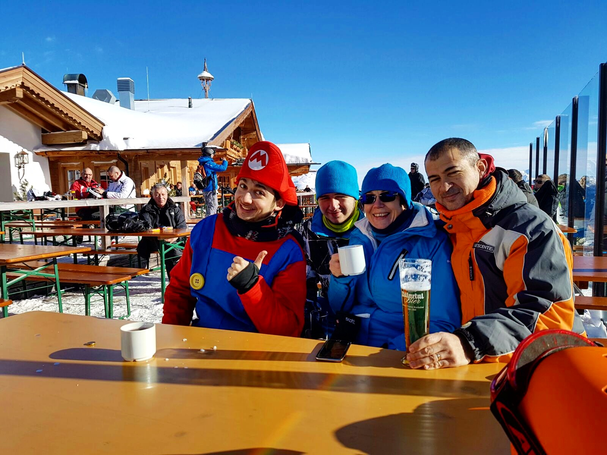
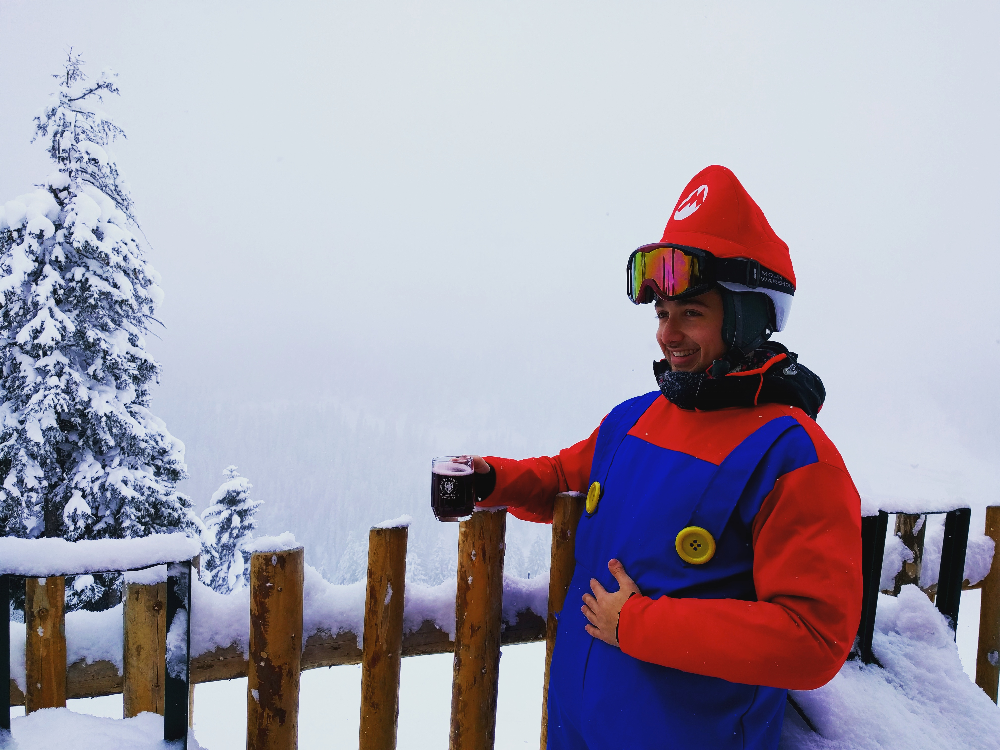
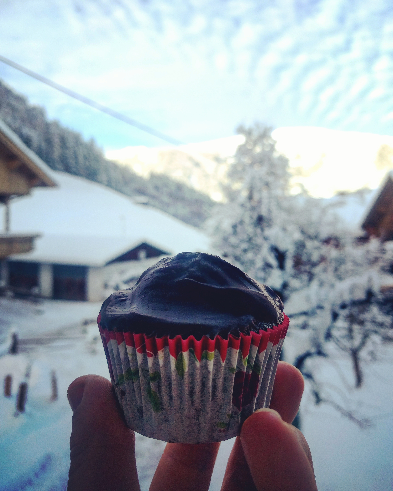
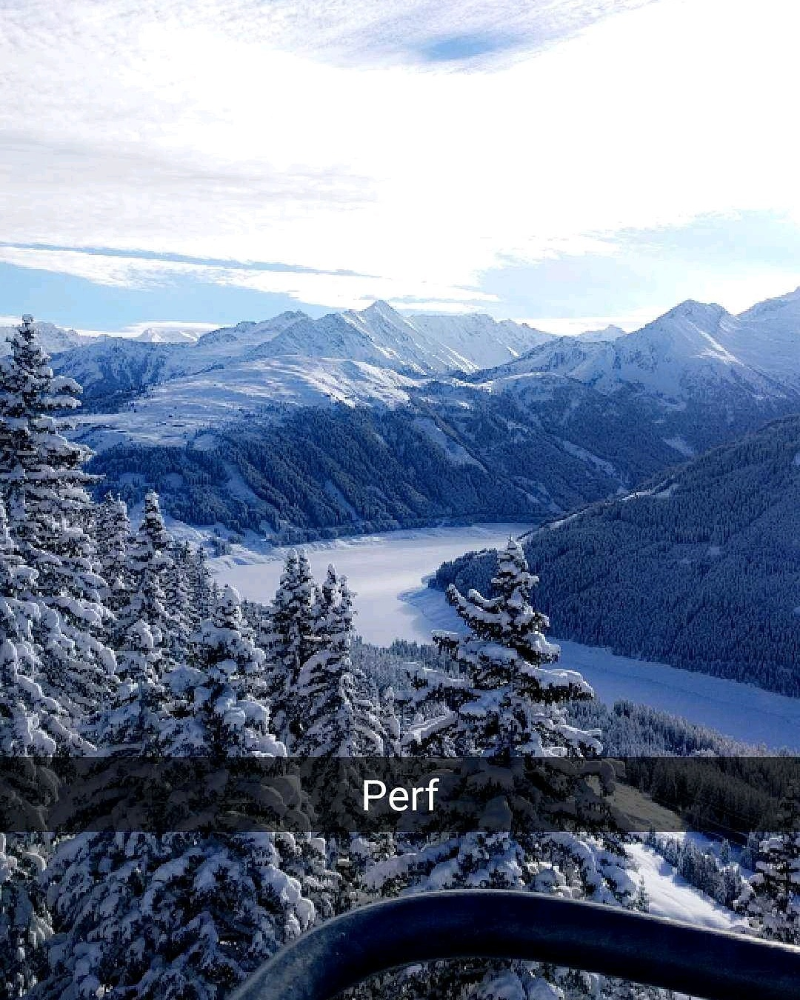
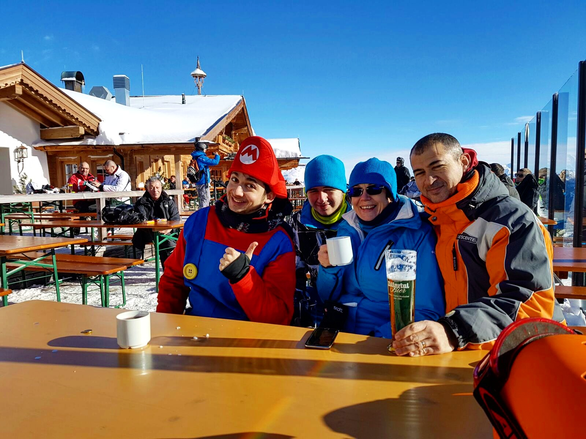
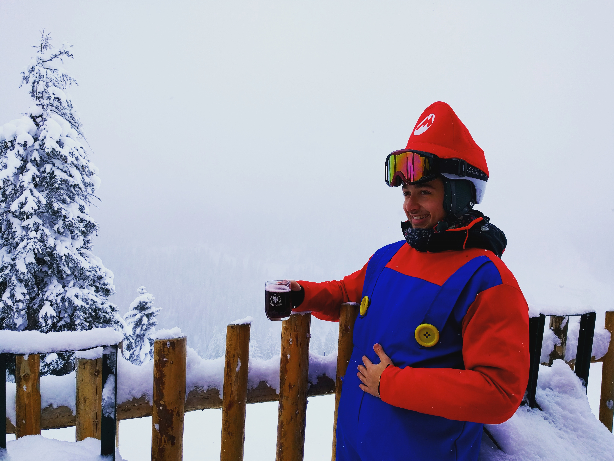
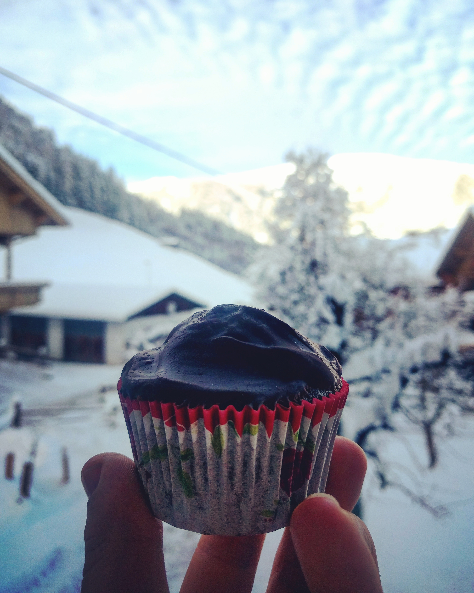
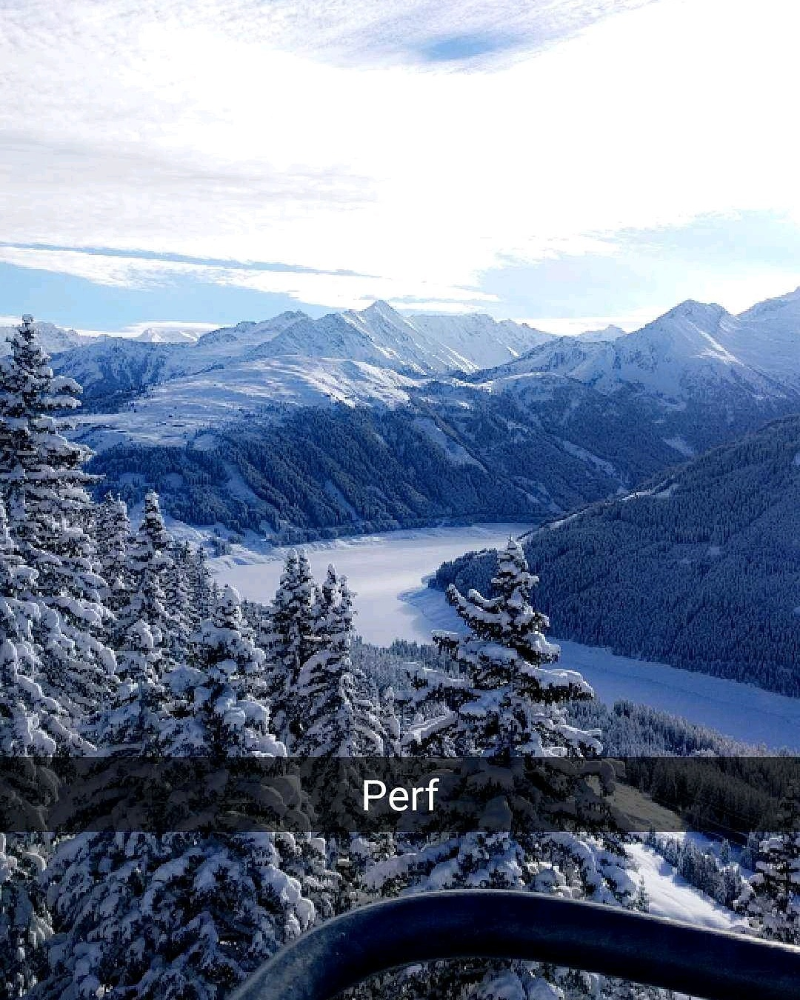

This one is about my last holiday in Austria.
I believe this is the 5th time I've been to Austria, and every single time
I've stayed in the exact same place as all the other times, a small
village named Hainzenberg(i know what u r thinking of but no, cooking meth is not exactly how I spend most of my quality family time").
Whenever I go skiing with my family, we always book this villa owned by an Austrian family, which has Frantz(the dad) as a leader.
This being said I'd tell u more about the amazing household that's owned by the mighty Frantz but I don't even know its name. This is mainly because every single time I asked my parents where r we gonna stay they gave me the sneaky "u know.... wink wink" look.
The best part about this tiny village is that it has a 7 km long sleigh slope. In our first trips here, we went to the slope daily, great fun... but as time passed we all became more and more competitive and minor incidents started to happen. You r probably thinking what could happen while you calmly slide down on a sleigh... eh, the "minor incidents" go all the way from running full speed face first into a tree to broken limbs. Regardless, I won ofc most of the races that we've been having there, that until my younger brother became twice as heavy as me. (Mom says that's cuz they've been feeding him genetically altered chickens when he was just a baby boy "Parenting 101. For other tips and tricks please call 0722...)
 Now that u have sort of an image in your head about how my super idyllic holidays with my parents and family friends look, let's get down to the really nasty stuff... Don't get me wrong here I love both my parents and the holidays that we r having together (can't really say the same thing about my bro tho.. jk jk he's my humongous baby brother ) but the fact that I have to wake up at 7ish every single day and put on some weird and extremely tight leggings makes everything let's just say less enjoyable. And when I say extremely tight don't think of the Qt type of tight, think of the crazy Elizabethan corset type of tight. And ofc what is the best thing that works with tight panties, an even tighter top. Anyway you know how they say that it takes 10 days to get used to everything... ehh well it is sort of true, took me 10 days every year for 4 YEARS to get used to that tightness( it's like being squeezed between two rocks tight)
Now, leaving the Austria story aside a bit, earlier this year I celebrated Halloween in Amsterdam(a tale for a different time :>) with a couple friends and what better way to celebrate Halloween if not to get dressed with your best friend into MARIO and LUIGI. Now that u know the origin of the costume we can get back to Hainzenberg:O pam pam. Really nice costume, its only problem was that it had only one huge zipper at the back.(like the nice fancy dresses that u see in movies on fancy women)
 and then... I realised I've never been so wrong before (almost was not even close to what I felt until we got home) ofc that on our way back home we had to do a couple final stops at supermarkets, gas station, and then guess what...the supermarket again, cuz mom "forgot" to buy milk...AYyy guess what, she came back with a chamber pot for her lil boy who can't really go alone at the loo Ha Ha funny mom that I have... And so the next couple days slid by (another playful word play xoxo) while eating huge Austrian schnitzels and drinking loads of mulled wine.
 Secondly, one other amazing thing that is a must try in Austria is the sweet apple strudel, a mix of a yummy apple pie with some super tasty vanilla sauce, great for the cold snowy days in which u feel like your legs can't handle the effort anymore. (even tho u still go for that one last crazy last ride) And now last but not the least,(and maybe the most important thing that may even save your life one day ), the tea (don't worry it doesn't stop here). I can see u already being scared thinking that London took the best of me. But don't worry my friend, it's not any type of tea, it's the MIGHTY JaggaTea. When going for a trip in the frozen lands of Austria how else to keep yourself warm than with a bit of innocent alcohol (ofc there r other ways xx). First impression, tea with Jagermeister... what can be greater than that (keep in mind that the Jagermeister can heal everything from sore throats to broken hearts)

And now...to wrap everything up, let's just say Austria is an incredible place to go to regardless of the thrill u r searching for, let it be skiing and sipping from a cup of JagaTea at over 3000m(where it's cold af, just sayin) or an amazing shopping sesh at the sparkling (u know cuz diamonds are sparkling) Swarovski museum, Austria can offer either. For the latter one(if u feel like it's an add to cart kind of day) I'd say Vienna it's the place for ya, but if u ever feel like you might want to dress in really tight leggings and make yourself cry of exhaustion...(great fun) checking out places like Tux - Tyrol or Mayrhofen may actually be worth it. Both some insanely beautiful places that have a lot to offer, all the way from unbelievable sights and ski slopes to beautiful and relaxing Spas(guess it's worth mentioning that here in saunas people come more or less naked)
Hope u, who ever u r that is reading this, enjoyed my lil story, and maybe u r even looking forward to my next adventure (wanna be) trip.
The one and only... Asul
Mateiasul
This being said I'd tell u more about the amazing household that's owned by the mighty Frantz but I don't even know its name. This is mainly because every single time I asked my parents where r we gonna stay they gave me the sneaky "u know.... wink wink" look.
The best part about this tiny village is that it has a 7 km long sleigh slope. In our first trips here, we went to the slope daily, great fun... but as time passed we all became more and more competitive and minor incidents started to happen. You r probably thinking what could happen while you calmly slide down on a sleigh... eh, the "minor incidents" go all the way from running full speed face first into a tree to broken limbs. Regardless, I won ofc most of the races that we've been having there, that until my younger brother became twice as heavy as me. (Mom says that's cuz they've been feeding him genetically altered chickens when he was just a baby boy "Parenting 101. For other tips and tricks please call 0722...)
 Now that u have sort of an image in your head about how my super idyllic holidays with my parents and family friends look, let's get down to the really nasty stuff... Don't get me wrong here I love both my parents and the holidays that we r having together (can't really say the same thing about my bro tho.. jk jk he's my humongous baby brother ) but the fact that I have to wake up at 7ish every single day and put on some weird and extremely tight leggings makes everything let's just say less enjoyable. And when I say extremely tight don't think of the Qt type of tight, think of the crazy Elizabethan corset type of tight. And ofc what is the best thing that works with tight panties, an even tighter top. Anyway you know how they say that it takes 10 days to get used to everything... ehh well it is sort of true, took me 10 days every year for 4 YEARS to get used to that tightness( it's like being squeezed between two rocks tight)
Now, leaving the Austria story aside a bit, earlier this year I celebrated Halloween in Amsterdam(a tale for a different time :>) with a couple friends and what better way to celebrate Halloween if not to get dressed with your best friend into MARIO and LUIGI. Now that u know the origin of the costume we can get back to Hainzenberg:O pam pam. Really nice costume, its only problem was that it had only one huge zipper at the back.(like the nice fancy dresses that u see in movies on fancy women)
 and then... I realised I've never been so wrong before (almost was not even close to what I felt until we got home) ofc that on our way back home we had to do a couple final stops at supermarkets, gas station, and then guess what...the supermarket again, cuz mom "forgot" to buy milk...AYyy guess what, she came back with a chamber pot for her lil boy who can't really go alone at the loo Ha Ha funny mom that I have... And so the next couple days slid by (another playful word play xoxo) while eating huge Austrian schnitzels and drinking loads of mulled wine.
 Secondly, one other amazing thing that is a must try in Austria is the sweet apple strudel, a mix of a yummy apple pie with some super tasty vanilla sauce, great for the cold snowy days in which u feel like your legs can't handle the effort anymore. (even tho u still go for that one last crazy last ride) And now last but not the least,(and maybe the most important thing that may even save your life one day ), the tea (don't worry it doesn't stop here). I can see u already being scared thinking that London took the best of me. But don't worry my friend, it's not any type of tea, it's the MIGHTY JaggaTea. When going for a trip in the frozen lands of Austria how else to keep yourself warm than with a bit of innocent alcohol (ofc there r other ways xx). First impression, tea with Jagermeister... what can be greater than that (keep in mind that the Jagermeister can heal everything from sore throats to broken hearts)

And now...to wrap everything up, let's just say Austria is an incredible place to go to regardless of the thrill u r searching for, let it be skiing and sipping from a cup of JagaTea at over 3000m(where it's cold af, just sayin) or an amazing shopping sesh at the sparkling (u know cuz diamonds are sparkling) Swarovski museum, Austria can offer either. For the latter one(if u feel like it's an add to cart kind of day) I'd say Vienna it's the place for ya, but if u ever feel like you might want to dress in really tight leggings and make yourself cry of exhaustion...(great fun) checking out places like Tux - Tyrol or Mayrhofen may actually be worth it. Both some insanely beautiful places that have a lot to offer, all the way from unbelievable sights and ski slopes to beautiful and relaxing Spas(guess it's worth mentioning that here in saunas people come more or less naked)
Hope u, who ever u r that is reading this, enjoyed my lil story, and maybe u r even looking forward to my next adventure (wanna be) trip.
The one and only... Asul
Mateiasul